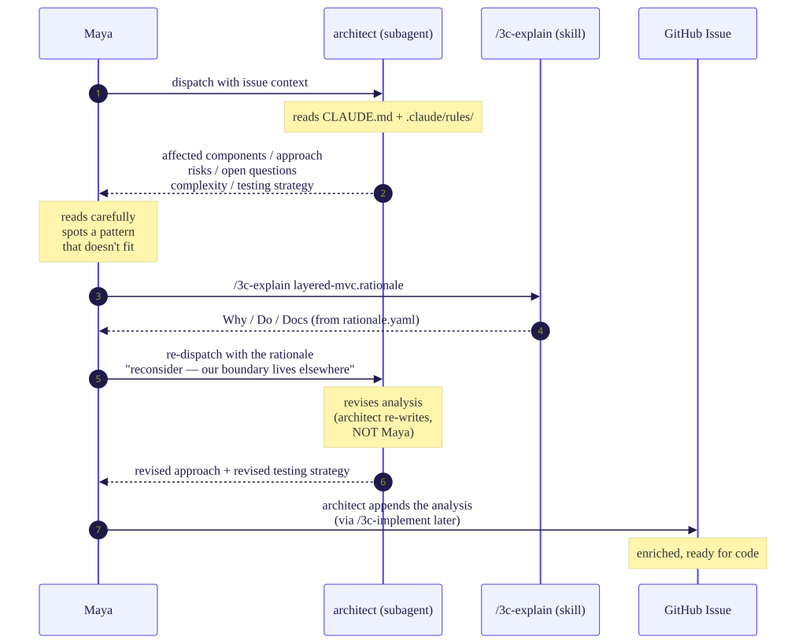
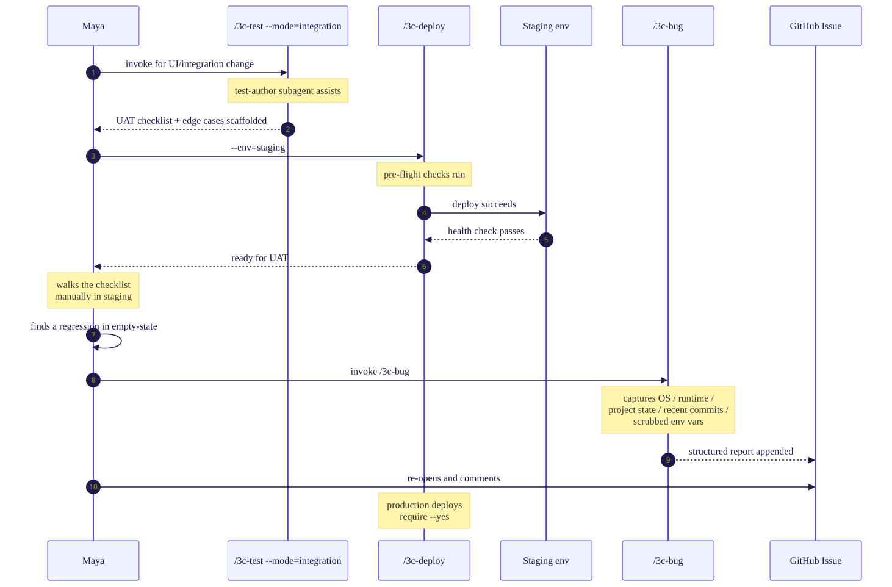

One engineer's working day inside a team that has adopted 3C — Claude Code Coach at L2 (v1.5.0). The slash commands she runs, the gates she passes, the rules that coach her, and the things she never types by hand.
CLAUDE.md under a 150-instruction cognitive budget, .claude/rules/, the architecture pattern library, the security policy templates — the shared spine every AI session reads from./3c-* slash commands — create-issue, implement, review, test, drift, explain, deploy, bug, onboard, bypass. The same lifecycle on every laptop.Specialists on call: the AI dispatches code-reviewer, test-author, architect, and security-reviewer when one perspective isn't enough. Coaching mode: gate failures explain why, not just no — rationale, example, ADR link — and go terse after two sightings of the same rule. Honesty discipline: one git revert removes 3C entirely; no source code leaves the workstation; the framework under-claims by design.
One brand note: if Maya's team ran npx 3c init --brand="Acme Standards", she invokes /acme-standards:review instead of /3c-review. This infographic uses the unbranded /3c-* names throughout for clarity. The upstream code is unchanged; only the slash namespace is brand-local.
Maya's morning starts with a PM brief, a Slack thread, and a CSV of customer feedback. She invokes /3c-create-issue, iterates on the draft, and ends with one GitHub issue carrying six required fields. The assistant types the issue body; Maya picks intent and judges fit.

The exact prompt Maya sends, and the resulting issue body she reviews:
What 3C does for you here: turns three loose inputs into one structured artefact in under a minute. What Maya still owns: reading the draft and judging "is this what I meant?" — the only typing she does is the next prompt. What 3C does NOT do: read source files, scrape Slack, or transmit anything to GitHub except the title / body / labels / repo Maya explicitly provided.
The issue is structured, not yet technical. Maya dispatches the architect subagent for an approach analysis, looks up the rationale for a pattern she's unsure about with /3c-explain, and re-prompts the architect with the rationale until the analysis fits.

What the architect returns (first pass), and Maya's /3c-explain lookup:
What 3C does for you: dispatches a specialist that reads your standards before answering. What Maya still owns: noticing the analysis doesn't fit, and choosing to re-dispatch — the architect re-writes; Maya doesn't. What 3C does NOT do: design the solution unilaterally; the architect proposes, you accept or push back.
After lunch, Maya processes the backlog dump. A batch prompt template runs /3c-create-issue against each row; duplicates collapse, two items kick back for human clarification, and /3c-drift catches any reference to a rule that has since been retired.

The batch template Maya wraps each row in, and the clarification comment she sends back to the PM for one of the rejected items:
What 3C does for you: consistent shape across eighteen issues + dedup + drift check, in one pass. What Maya still owns: reading the two flagged items and deciding "ask the human" vs "drop it". What 3C does NOT do: invent acceptance criteria for unclear rows; the human-clarification branch is the framework saying "I cannot make this concrete; you decide."
With 12 clean issues in hand, Maya runs /3c-review over the sprint as a whole — five checks that catch the inconsistencies a single-issue review misses. /3c-standards history feeds every check so the assertions match the rules that existed on the relevant date.

The /3c-review invocation adapted for sprint scope, and the resulting summary of findings:
What 3C does for you: five inconsistency checks across the whole sprint, dated against the rules that actually applied. What Maya still owns: choosing whether to merge, sequence, or punt each finding — the skill flags, she decides. What 3C does NOT do: reject the sprint; one issue gets punted for ADR-level discussion, the rest proceed.
Maya picks issue #1284 and runs /3c-implement. From branch creation through merge, every keystroke that changes code, tests, or the PR description is typed by Claude Code or by a /3c-* skill. Maya prompts, judges, and approves.

The coaching segment Maya sees when the Pre-Commit hook flags her import order, and the JSONL event the hook telemetry records:
What 3C does for you: six gates fire automatically; failures explain why; every event is recorded. What Maya still owns: reading the coaching segment, deciding "rule is right, regenerate" vs "rule is wrong, push to standards-history". What 3C does NOT do: fix the code for her unbidden — every revision happens because Maya re-prompted Claude Code with the diagnosis.
After issue #1284 ships, Maya runs issues #1285, #1286, #1287 through the same loop. Coaching goes terse on rules she has seen twice. New prompts reference shipped PRs as patterns, holding the 150-instruction budget. The hot-fix path and the tricky-failure path both route through the assistant — never around it.

The terse coaching segment Maya sees on a third sighting of import-order, and the JSONL bypass event when she ships a hot-fix:
What 3C does for you: coaching gets quieter, prompts get shorter, gates fire the same. Velocity compounds because the team's standards are doing the standardising, not the developers. What Maya still owns: the decision to bypass, the rationale she writes, the follow-up issue she files after shipping. What 3C does NOT do: erase the bypass — every event is permanent and reviewable.
For #1287 (a UI change), Maya scaffolds an integration checklist via /3c-test --mode=integration, deploys to staging through /3c-deploy --env=staging, walks the checklist by hand, and uses /3c-bug to file the one regression she found — appended directly to the original issue with full environment capture.

The header of the /3c-bug report appended to issue #1287 (env values scrubbed):
What 3C does for you: the integration checklist is generated, the environment is captured, the bug report is structured — no "works on my machine" archaeology. What Maya still owns: walking the checklist with human eyes; only humans notice that empty-state looks broken. What 3C does NOT do: deploy to production for her — production deploys require --yes on the deploy command.
Maya opens .3c/dashboard.html in her browser. Three panels: which rules fired most today, what proportion of her commits passed the gate on first try, and the trend of post-edit findings across the sprint. Local-only. Gitignored. Never egressed at L2. Her manager cannot see this.

What 3C does for you: rolls up the day's local JSONL events into three signals you can act on tomorrow. What Maya still owns: what to do about a 78% pass rate — push it higher with practice, or write a new rationale so coaching helps her? What 3C does NOT do at L2: share this with anyone. Not the team. Not the manager. The L3 team-observability dashboard is a different surface, opt-in per team, on a self-hostable backend — not a stealth pipe from this view.
Six wrong turns most teams make in their first week with 3C, and the one rule that summarises the rest. Print this page, pin it next to your laptop — the framework gets quieter as the team internalises it.
/3c-create-issue produces what you prompt, not what you mean. Read every issue body before publishing..claude/rules/ and the 150-instruction budget. Re-pasting blows the budget and degrades the model.architect is cheaper before code than after./3c-create-issue · /3c-explain · /3c-drift · /3c-review · /3c-standards history · /3c-implement · /3c-test [--mode=integration] · /3c-deploy --env=<…> · /3c-bug · /3c-bypass --reason="..."architect for design calls · security-reviewer for auth/crypto/input-handling · code-reviewer pre-PR · test-author for scaffolding inside /3c-test/3c-bypass --reason="<one-line>" — logged, never silentCLAUDE.md (root, ≤150 instructions) · .claude/rules/<rule>.rationale.yaml · .3c/coaching.yaml · .3c/coaching/<user>.yaml · .3c/events/*.jsonl · .3c/dashboard.html